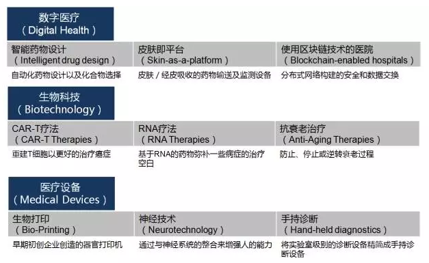
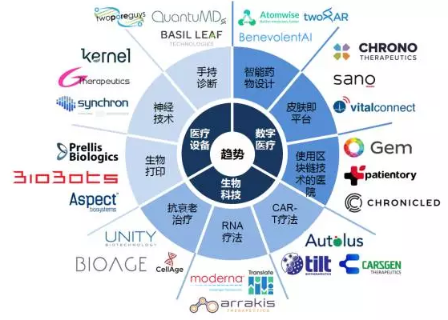
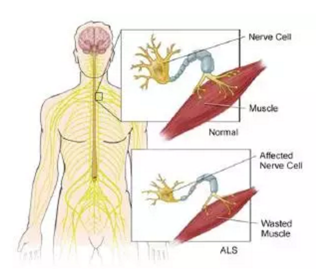
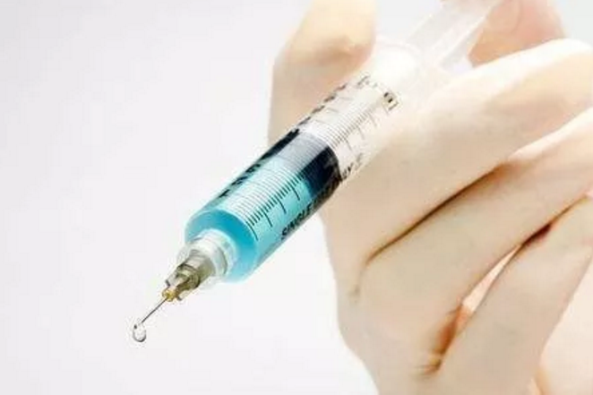
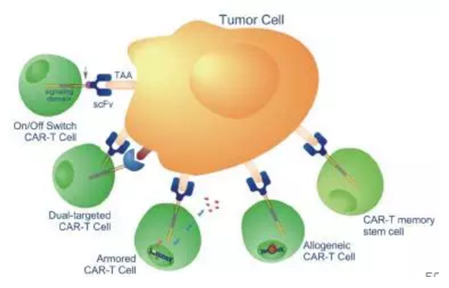
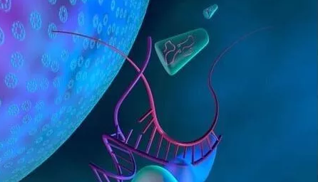
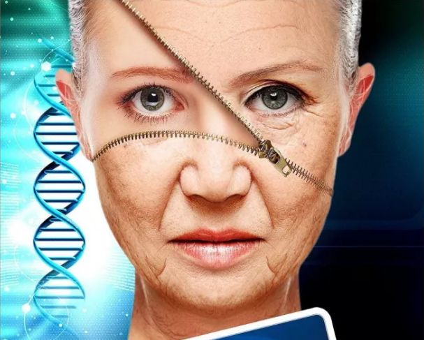
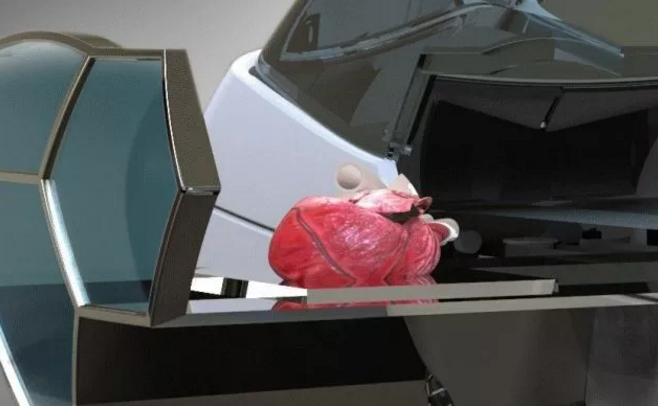

研究丨癌症治愈不再遥不可及，这些医疗技术创新正在改变世界【星河研究院】
2017-10-17来源：星河研究院
- 医疗正在改变世界，而科技正在改变医疗。
- 在医疗行业中，技术发展最引人注目的是数字医疗（Digital health）、生物科技（Biotechnology）和医疗设备（Medical devices）三个领域。 星河研究院今天将通过CB Insights的一份报告，对这三个媒体曝光度最高的领域进行详细分析，一起来看看哪些新技术和初创公司正在引领未来吧。
- 下面这两张图是这三个领域中各自最受关注的三个细分领域和其中的代表企业，我们将在下文进行一一分析。
- 
- 
- 自2013年以来，数字医疗领域的投融资事件达到4412笔，总投资金额达到280亿美元。下面我们来看一下数字医疗领域的三个趋势。
- 智能药物设计：人工智能在制药中的新角色
- 智能药物设计是指使用自动化工具，如人工智能等来加快药物发现。一些初创公司正在构建计算平台，以更好地识别可能在后续测试中取得成功的化合物。
- 使用自动化工具加快药物研发很重要，因为药物的发现过程通常涉及数百种化合物的识别和测试，需要在一步一步的试验和检测中逐步筛选。人工智能可以通过计算和学习缩小治疗靶位的列表，帮助制药公司更快、更便宜地进行药物研发。
- 现在进入临床前的实验室和动物测试之前，药物发现的过程需要3到6年，进行1-3期临床测试到FDA认证更是需要多年的时间。
- 人工智能工具的应用，可以把初期药物发现的时间缩短至1-2年，帮助制药公司尽快进入实验室和动物测试阶段。很多初创企业在利用人工智能技术帮助制药公司缩短药物研发过程、改进实验结果、降低研发费用。
- 代表企业：英国的BenevolentAI
- BenevolentAI使用人工智能发现了新型的ALS治疗药物。它使用人工智能从临床试验和学术论文中提取生物医学信息，识别那些导致临床试验失败的分子，然后分析在其他疾病中的效果。
- 创始人Ken Mulvany表示，公司已经有约20个临床前的项目（例如肌萎缩性侧索硬化，ALS）和3-4个2期临床项目，其中之一是使用bavisant来治疗帕金森综合症患者的白天嗜睡症状。BenevolentAI累计融资金额1.41亿美元，估值超过10亿美元。
- 
- 皮肤即平台：用可穿戴设备监测与给药
- 皮肤即平台是指使用直接贴在皮肤上的可穿戴设备来连续监测生物识别指标以及给药。
- 目前的检测方法，无论是血压、血糖，还是心率，都是不规则的，容易出现人为错误。而目前的给药方法，无论是通过针还是药丸也都会出现错误。直接经皮肤的监测和药物递送平台可以节省医生的时间，并让患者对自己的疾病有更强的控制力。
- 药物研发已经有了很大的发展，但是给药方式和非侵入式监测技术还停留在过去。现在有一些初创企业开始研发新的技术和接触式的可穿戴设备，来提升患者体验、减少医生负担和失误、提高患者的持续使用时间。
- 
- 代表企业：Chorine Therapeutics
- 它是给药方式创新的一个初创企业，开发了一种穿透性贴片，可透皮（经皮肤）给药。贴片链接到一个平台，管理给药时间、记录给药剂量，同时可以跟踪合规情况。
- 公司的第一个产品是一个10周的尼古丁代替计划，同时它也在开发帕金森的药物、阿片类戒断药物和慢性／急性疼痛解决方案等。Chrono目前累计融资金额8470万美元。

- 使用区块链技术的医院：患者数据全球可访问
- 区块链是密码保护的分布式记账技术，首先被比特币使用，成为比特币的底层技术。虽然该技术主要用于金融领域，但它在医疗领域更有前景。
- 目前的健康数据管理模式受到医疗记录系统无法互联互通和日益频繁的数据泄漏事件的困扰，而区块链技术可以确保从医药供应链到全球医疗记录的操作安全性。
- 区块链在未来可以影响医疗领域的很多方面，例如健康数据安全、医药供应链、医疗病例互用以及医保报销等。
- ●健康数据安全方面，在区块链上注册的医疗记录将被加密，患者可以选择授予访问的权限，例如只给医护人员授权；
- ●医药供应链方面，区块链网络能够进行持续的质量控制，从制造商到销售商到患者的每一步都可以进行认证；
- ●医疗病例互用方面，病例信息可以不用单独存储在单独医院的EMR中，可以将每个新的数据点存储在患者可控制访问的分布式公共账本上；
- ●在医保报销方面，区块链可以验证每个互动点的数据，这就使即时的保险索赔验证和优先授权请求得以实现。
- 代表企业：Gem
- 这是一个开发应用医疗和供应链管理的区块链初创企业。他们的Gem Healthcare Network将通过许可的区块链来增加安全性，其中患者是可以控制访问权限的，并且每次更新的信息可以通过分布式账本系统记录。
- Gem与菲利普合作，探索区块链如何支持“以患者为中心的医疗保健”。它还与美国疾病控制中心和预防中心（CDC）合作，协助管理人群健康和灾难应对方案。在这个领域的初创企业都还比较早期，Gem的累计融资金额达到1040万美元。
- CAR-T细胞疗法：癌症治愈不再遥不可及
- 几十年来，癌症一直是死亡率较高的疾病，在传统的手术切除、放疗化疗、靶向治疗的推动下，癌症死亡率已经下降了很多，但仍然是无法完全治愈的疾病。随着免疫疗法的发展，癌症治愈已经不是遥不可及的事情。
- 随着诺华CAR-T细胞疗法的Kymriah药物获得FDA认证上市，CAR-T细胞疗法成了最火热的领域。
- 这种疗法是通过提取患者体内的嵌合抗原受体T细胞，在实验室对它们进行基因修饰，将编码特定癌症的CAR的基因导回患者体内，这些T细胞可以快速的摧毁癌症靶细胞，从而达到治疗癌症的目的。
- 目前这种细胞免疫疗法仅适用于非实体瘤，例如急性淋巴性白血病和非霍奇金淋巴瘤等。

- 代表企业：中国的科济生物（CARsgen Therapeutics）
- 科济生物主要关注用于实体瘤和血液恶性肿瘤的CAR-T疗法。目前公司已经开始多个一期临床试验，例如肝细胞癌、胶质母细胞瘤和鳞状肺癌等。
- 今年8月进入了抗紧密连结蛋白18.2-CAR-T细胞治疗胃癌和胰腺癌的一期临床试验。科济生物累计融资金额达到3000万美元。
- 
- RNA：癌症、传染病、慢性病的新疗法
- 20世纪末的一连串发现揭示了RNA分析调控DNA和蛋白质行为的强大能力，它可以让特定分子的活性增加或减少。 因此通过操控RNA，可以发展癌症、传染病和许多慢性疾病的新疗法，而且靶向RNA的药物还具有治疗多种对常规药物有抗药性的疾病的潜力。
- 
- 代表企业：Moderna
- Moderna是这个领域走在最前列的初创企业，它的估值已经超过10亿美元。
- Moderna正在开发基于mRNA的疫苗管道。他们的平台将mRNA输送到人体的细胞中，产生蛋白质，就像身体被病毒感染一样。然后身体会识别这些蛋白质，并增加免疫应答。 Moderna已经开展了几个早期的mRNA疫苗研究，包括流感H10、流感H7盒寨卡病毒。该公司累计融资金额已达13.4亿美元。
- 抗衰老治疗：衰老的秘密等待揭开
- 所有的动物都会衰老，但衰老的原理却一直没有被揭开。目前关于衰老的不确定理论让抗衰老治疗处于比较混乱的状态。
- 关于衰老的理论有四种不同的解释：
- ●细胞衰老理论，认为衰老是由于端粒虽短导致的细胞分裂停止，组织中死细胞的积累造成了老化；
- ●活性氧（reactive oxygen species）理论，认为随着时间的推移，自由基和活性氧的积累导致氧化细胞损伤，这可能也导致了年龄相关的疾病，如癌症；
- ●DNA甲基化理论，许多与年龄相关的疾病显示异常的甲基化模式，但因果关系还需进一步研究；
- ●端粒缩短理论，端粒是染色体末端的DNA区域，被认为是分子钟，它们的缩短可导致细胞死亡。
- 虽然目前还没有很好地对衰老进行解释，但如果针对基础衰老过程的解毒剂或其他干预措施在临床试验中证明是有效和安全的，那么就可以更好地预防或治疗多种与年龄相关的疾病和功能缺陷。
- 
- 代笔企业：Unity Biotechnology
- 其抗衰老药物已经得到了梅奥诊所的支持。Unity着重关注消除衰老细胞，例如非分裂细胞。 在动物实验中，Unity已经证明消除衰老细胞可以逆转／预防广泛的疾病，例如骨关节炎和动脉粥样硬化。 Unity已经开始了90多名候选人的临床试验，并开发了13种FDA批准的药物。Unity的累计融资金额达到1.51亿美元。
- 生物打印：器官移植患者的福音
- 器官移植非常昂贵而且等待时间非常漫长。在美国，平均心脏移植的成本达到140万美元，最便宜的眼角膜移植也需要3万美元。 在等待时间上，主要器官（例如心脏、肺、肠、肝、肾、胰腺等）移植的平均等待时间都在半年以上，肾脏移植的等待时间更是达到了近2年。
- 3D生物打印的出现将使器官“无限量供应”，价格也将更低。
- 
- 代表企业：Prellis Biologics
- Prellis Biologics是未来糖尿病患者的希望，它开发了一种3D激光打印方法，以单细胞精度建立微血管和组织层。为了达到打印可移植人体器官和组织的目标，公司在研究打印胰腺胰岛素分泌细胞。 Prellis还开发了一种能够产生免疫应答和抗体产生的人类淋巴结有机体。Prellis Biologics的累计融资金额达到205万美元。
- 神经技术：软件将代替药物治疗神经系统疾病
- 长期以来，神经系统与医疗设备的交互是无法实现的。现阶段，只能通过植入设备对大脑的疾病区域进行定位的修复，将神经系统延伸到人体之外才刚刚开始。
- 在未来，我们相信大脑和机器的双向通信将变得常规，软件将代替药物治疗神经系统的疾病，例如癫痫。
- 代表企业：Kernel
- Kernel是Braintree的创始人BryanJohnson创立的，其目的是增强人的智力。去年10月，BryanJohnson向其投资了1亿美元。 在纽约大学、MIT、哥伦比亚大学、南加州大学和西北大学研究人员的帮助下，该公司正在开发自己的硬件和软件来治疗神经疾病，如癫痫、认知缺陷和阿尔茨海默症等。 在公司2011年发表的一项研究显示，他们已经开始了一项临床试验，使用植入式神经元装置恢复老鼠的记忆并改善信息回忆。
- 手持诊断：诊断设备将会变得越来越小
- 由于缺乏便宜、移动的诊断设备和诊断技术，全球有数百万人得不到及时的救助。在未来，随着软件的发展，诊断设备将会变得越来越小，应用将会越来越广泛。
- 代表企业：QuantuMDx
- 该公司开发的是便携式分子TM诊断设备。他们的旗舰产品是Q-POC，可以通过内置的DNA测序，用10-20分钟对患者进行药物敏感性测试并进行诊断。该公司正在与Bill & Melinda Gates基金会合作开发结核病和宫颈癌检测。该设备将于2018年实现商业化。